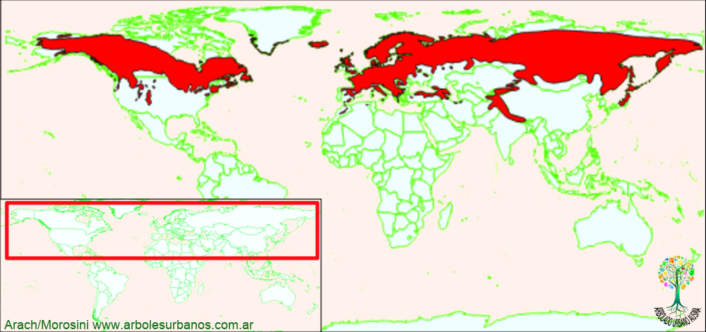

Click en las imágenes para ampliar

{kind=link}
{kind=link}
{kind=link}
Nombre científico: Juniperus communis
Familia botánica: Cupresáceas
Origen: Según algunos autores es la conífera de mayor área de distribución natural. Existe en la mayoría del hemisferio norte desde Alaska hasta Groenlandia, desde el oeste de Europa hasta el extremo de Asia y desde el Círculo polar ártico, hasta el norte de África; en una amplia varidad de climas desde tipo mediterráneo, hasta templado frio, y desde el nivel del mar hasta los 2500 metros de altitud.
Descripción general: Es un árbol de pequeño porte que normalmente tiene de 2 a 4 metros de altura, raramente llega a los 10 metros; hay que tener en cuenta que esta especie posee varias subespecies que hacen que presente muchas formas distintas algunas de ellas de porte más arbustivo, achaparrado o arbóreo. En general su copa es de forma piramidal extendida y por poseer ramificaciones secundarias péndulas le dan un aspecto algo desgarbado, también existen variedades de forma estrechamente cónica o columnar. Su corteza es gris y lisa cuando joven, oscureciéndose y agrietándose al envejecer.
Hojas: Sus hojas están dispuestas en verticilos de tres y son de forma acicular miden 1,5 cm, de largo, de color verde brillante y con una banda gris blanquecina en el haz.
Estróbilos: Esta planta es del tipo dioico, aunque raramente se encuentran ejemplares que tienen los dos sexos en la misma planta. Los estróbilos masculinos son pequeños y de color amarillos. Los estróbilos femeninos están ubicados en las axilas foliares, son de forma esférica, de 0,5 cm. de diámetro en principio verde claro, luego violeta y al final de su maduración de color negro, carnosos y aromáticos.
Reproducción: Se la puede multiplicar tanto por medio de semillas a la que hay que someter escarificación húmeda por 40 días, auque para evitar este procedimiento se puede realizar una siembra de otoño. Otra manera de reproducir estas plantas es por medio de estacas de entre 5 a 15 cm. de largo.
Usos: Dado su pequeño porte, su madera se utiliza en la elaboración de objetos pequeño tales como cabos de herramientas.
Sus pocos requerimientos en cuanto a cuidados, suelo y riego, además de su mediana velocidad de crecimiento lo hacen recomendable para la realización de cercos vivos de baja y mediana altura, también se lo planta en macizos y como ejemplares aislados, sobre todo para jardines de pequeñas dimensiones, o canteros.
Las bayas desde hace cientos de años; son utilizadas con fines medicinales como febrífugo, diurético, elaboración de pomadas, aceites esenciales y demás. En la gastronomía como condimento y hasta para aromatizar algunos tipos de cervezas.
Además de estos usos esta planta está asociada a diversas creencias, variando según las culturas, se utilizan ramas con frutos para atraer la fortuna a los hogares y se lo planta en el frente de las casas para alejar personas negativas.
Particularidades: Esta especie se dispersa fácilmente y es algo a tener en cuenta cuando se quiera plantar cerca de formaciones boscosas nativas, ya que se asilvestra fácilmente compitiendo con la vegetación existente.